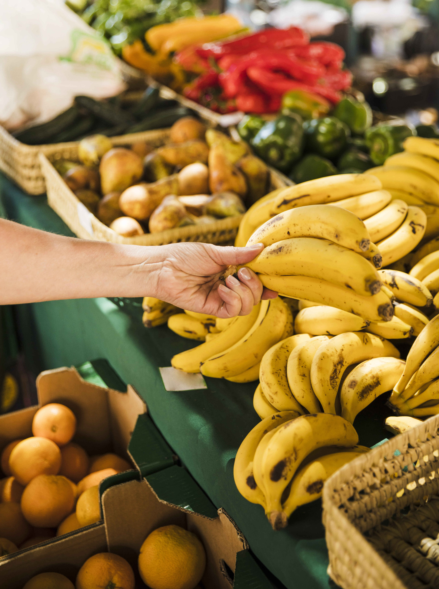

<ion-content>
	<ion-refresher slot="fixed" (ionRefresh)="handleRefresh($event)">
		<ion-refresher-content
		pullingIcon="chevron-down-circle-outline"
		refreshingSpinner="circles">
		</ion-refresher-content>
	  </ion-refresher>
	<ion-header class="ion-no-border">
		<ion-toolbar>
			<ion-buttons slot="start">
				<ion-button>
					<ion-icon name="language-outline" size="large"></ion-icon>
			<ion-select interface="popover" [(ngModel)]='language' (ionChange)='languageChange()'>
			  <ion-select-option value='mr'>मराठी</ion-select-option>
			  <ion-select-option value='en'>English</ion-select-option>
			</ion-select>
				</ion-button>
			</ion-buttons>
		</ion-toolbar>
	</ion-header>
	
	<div *ngIf="!fcheck">
	<div *ngIf = "check">
		<div class="card">
			<div class="card-content">
			  <div class="bottom">
				<h2 style="color: white;">{{'tab4.title' | translate}}</h2>
			  </div>
			</div>
			<div class="card-bg">
			  
			</div>
		  </div>
		
			<ion-card>
			  <ion-card-header>
			  </ion-card-header>
			  <ion-card-content class="ion-text-justify">
				<ion-card-title class="ion-margin-bottom">{{'tab4.title2' | translate}}</ion-card-title>
				<ion-list>
					<ion-item>
						<ion-select  placeholder="{{'tab4.placeholder.state' | translate}}" [(ngModel)]="state" style="font-weight:bolder;">
						 <ion-select-option value="Maharashtra">{{'tab4.state' | translate}}</ion-select-option>
						</ion-select>
						<ion-button
						(click)="clear()"
						size="small"
						fill="clear"
						color="medium"
						horizontal="end">
						<ion-icon slot="icon-only" name="close"></ion-icon>
					  </ion-button> 
					  </ion-item>
					  <ion-item *ngIf="state == 'Maharashtra'">
						<ion-select placeholder="{{'tab4.placeholder.district' | translate}}" [(ngModel)]="district" style="font-weight:bolder;">
						  <ion-select-option value="Ahmednagar">{{'tab4.district.1' | translate}}</ion-select-option>
						  <ion-select-option value="Akola">{{'tab4.district.2' | translate}}</ion-select-option>
						  <ion-select-option value="Amravati">{{'tab4.district.3' | translate}}</ion-select-option>
						  <ion-select-option value="Aurangabad">{{'tab4.district.4' | translate}}</ion-select-option>
						  <ion-select-option value="Beed">{{'tab4.district.5' | translate}}</ion-select-option>
						  <ion-select-option value="Bhandara">{{'tab4.district.6' | translate}}</ion-select-option>
						  <ion-select-option value="Buldhana">{{'tab4.district.7' | translate}}</ion-select-option>
						  <ion-select-option value="Chandrapur">{{'tab4.district.8' | translate}}</ion-select-option>
						  <ion-select-option value="Dhule">{{'tab4.district.9' | translate}}</ion-select-option>
						  <ion-select-option value="Gadchiroli">{{'tab4.district.10' | translate}}</ion-select-option>
						  <ion-select-option value="Gondia">{{'tab4.district.11' | translate}}</ion-select-option>
						  <ion-select-option value="Hingoli">{{'tab4.district.12' | translate}}</ion-select-option>
						  <ion-select-option value="Jalgaon">{{'tab4.district.13' | translate}}</ion-select-option>
						  <ion-select-option value="Jalna">{{'tab4.district.14' | translate}}</ion-select-option>
						  <ion-select-option value="Kolhapur">{{'tab4.district.15' | translate}}</ion-select-option>
						  <ion-select-option value="Latur">{{'tab4.district.16' | translate}}</ion-select-option>
						  <ion-select-option value="Mumbai">{{'tab4.district.17' | translate}}</ion-select-option>
						  <ion-select-option value="Nagpur">{{'tab4.district.19' | translate}}</ion-select-option>
						  <ion-select-option value="Nanded">{{'tab4.district.20' | translate}}</ion-select-option>
						  <ion-select-option value="Nandurbar">{{'tab4.district.21' | translate}}</ion-select-option>
						  <ion-select-option value="Nashik">{{'tab4.district.22' | translate}}</ion-select-option>
						  <ion-select-option value="Osmanabad">{{'tab4.district.23' | translate}}</ion-select-option>
						  <ion-select-option value="Palghar">{{'tab4.district.24' | translate}}</ion-select-option>
						  <ion-select-option value="Parbhani">{{'tab4.district.25' | translate}}</ion-select-option>
						  <ion-select-option value="Pune">{{'tab4.district.26' | translate}}</ion-select-option>
						  <ion-select-option value="Raigad">{{'tab4.district.27' | translate}}</ion-select-option>
						  <ion-select-option value="Ratnagiri">{{'tab4.district.28' | translate}}</ion-select-option>
						  <ion-select-option value="Sangli">{{'tab4.district.29' | translate}}</ion-select-option>
						  <ion-select-option value="Satara">{{'tab4.district.30' | translate}}</ion-select-option>
						  <ion-select-option value="Sindhudurg">{{'tab4.district.31' | translate}}</ion-select-option>
						  <ion-select-option value="Solapur">{{'tab4.district.32' | translate}}</ion-select-option>
						  <ion-select-option value="Thane">{{'tab4.district.33' | translate}}</ion-select-option>
						  <ion-select-option value="Wardha">{{'tab4.district.34' | translate}}</ion-select-option>
						  <ion-select-option value="Washim">{{'tab4.district.35' | translate}}</ion-select-option>
						  <ion-select-option value="Yavatmal">{{'tab4.district.36' | translate}}</ion-select-option>
						</ion-select>
						<ion-button
						(click)="clear2()"
						size="small"
						fill="clear"
						color="medium"
						horizontal="end">
						<ion-icon slot="icon-only" name="close"></ion-icon>
					  </ion-button>
					  </ion-item>
					  <ion-item *ngIf="district">
						<ion-select placeholder="{{'tab4.placeholder.commodity' | translate}}" [(ngModel)]="commodity" style="font-weight:bolder;">
						  <ion-select-option value="Onion">{{'tab4.commodity.1' | translate}}</ion-select-option>
						  <ion-select-option value="Wheat">{{'tab4.commodity.2' | translate}}</ion-select-option>
						  <ion-select-option value="Potato">{{'tab4.commodity.3' | translate}}</ion-select-option>
						  
				  
						</ion-select>
						<ion-button
						(click)="clear3()"
						size="small"
						fill="clear"
						color="medium"
						horizontal="end">
						<ion-icon slot="icon-only" name="close"></ion-icon>
					  </ion-button>
					  </ion-item>
				  </ion-list>
			  </ion-card-content>
			</ion-card>

	
		
	  <ion-button fill="clear" size="large" color="light" (click)="fetchData()" class="subbtn">{{'tab4.submit' | translate}}</ion-button>
  </div>
</div>
	  <ion-content *ngIf="!nodata" class="scroll-content ionic-scroll  has-header">
		<div >
			<br>
			<br>
		<div class="scroll" style="-webkit-transform: translate3d(0px, -50px, 0px) scale(1);">
			<div style="position: relative;
    text-align: center;
    font-size: 23px;">
		<p>Rate from Government</p>
		</div>
		<div *ngIf="!govtdata">
			<h4 style="text-align: center;"> No Recent Rates from Government</h4>
		</div>
		<ion-card *ngFor="let row of rows">
		  <ion-card-content *ngIf="!check">
			<h2>District: {{row?.district}}</h2>
			<h2>Market: {{row?.market}}</h2>
			<h2>Commodity {{row?.commodity}}</h2>   
			<h2>Max Price:₹{{row?.max_price}}/Quintal</h2>
			<h2>Min Price:₹{{row?.min_price}}/Quintal</h2>
			<h2>Last Updated on:{{data_get.updated * 1000 | date:'dd/MM/yyyy'}}</h2>
		  </ion-card-content>
		</ion-card>
		<div style="position: relative;
    text-align: center;
    font-size: 23px;">
		<p>Rate from Local APMC</p>
		</div>
		

		<div *ngIf="apmcdata">
		<ion-card *ngFor="let frate of rates">
			<ion-card-content >
			  <h2>District: {{frate.fdistrict}}</h2>
			  <h2>Market: {{frate.fmarket}}</h2>
			  <h2>Commodity {{frate.fcommodity}}</h2>   
			  <h2>Price:₹{{frate.fprice}}/Quintal</h2>
			  <h2>Last Updated on:{{frate.fdate}}</h2>
			</ion-card-content>
		  </ion-card>
		</div>
		<div *ngIf="!apmcdata">
			<h4 style="text-align: center;"> No Recent Rates from APMC</h4>
		</div>
		</div>
	  </div>
		</ion-content>
		</ion-content>
	
	
	
	